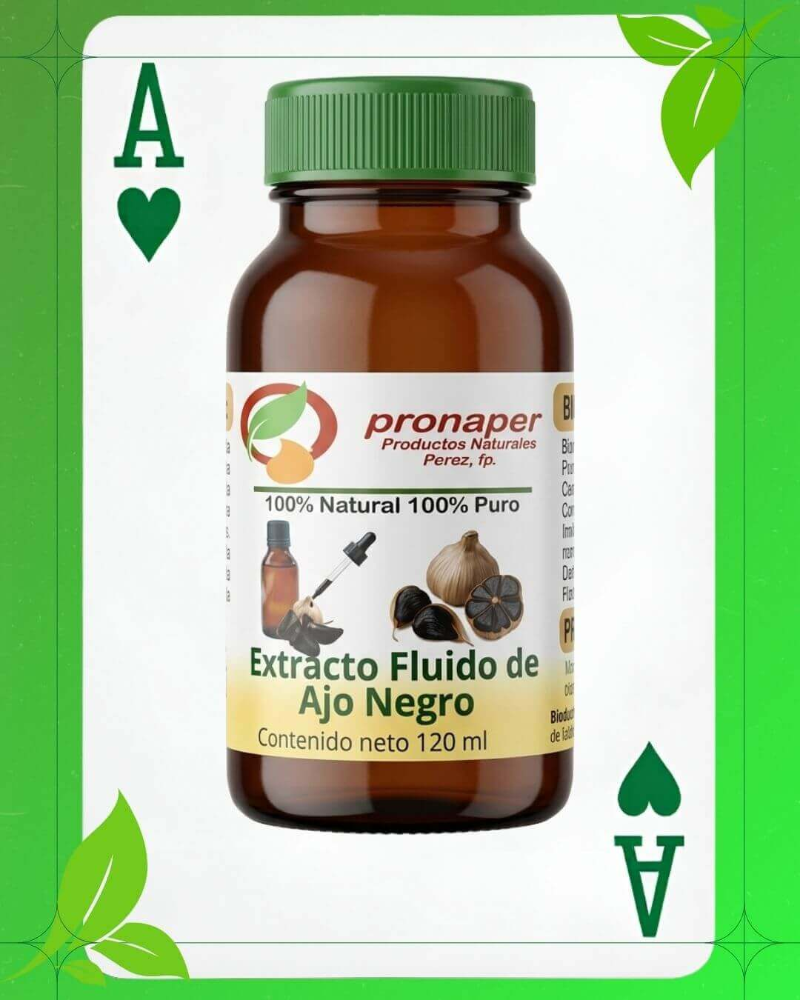
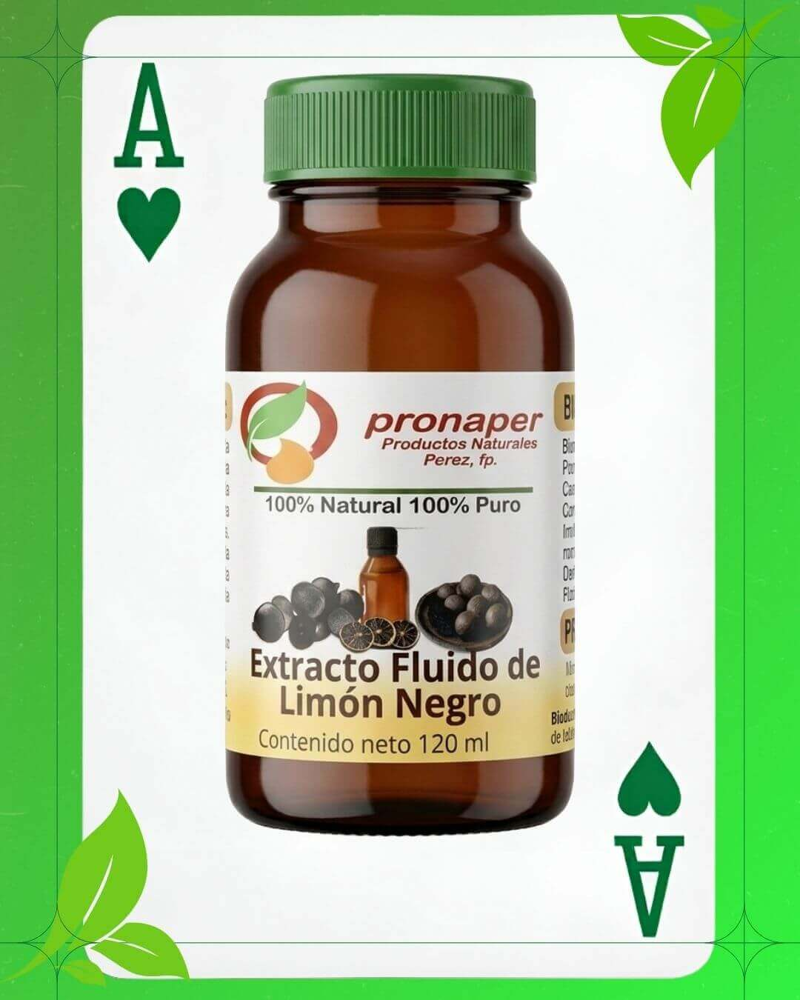
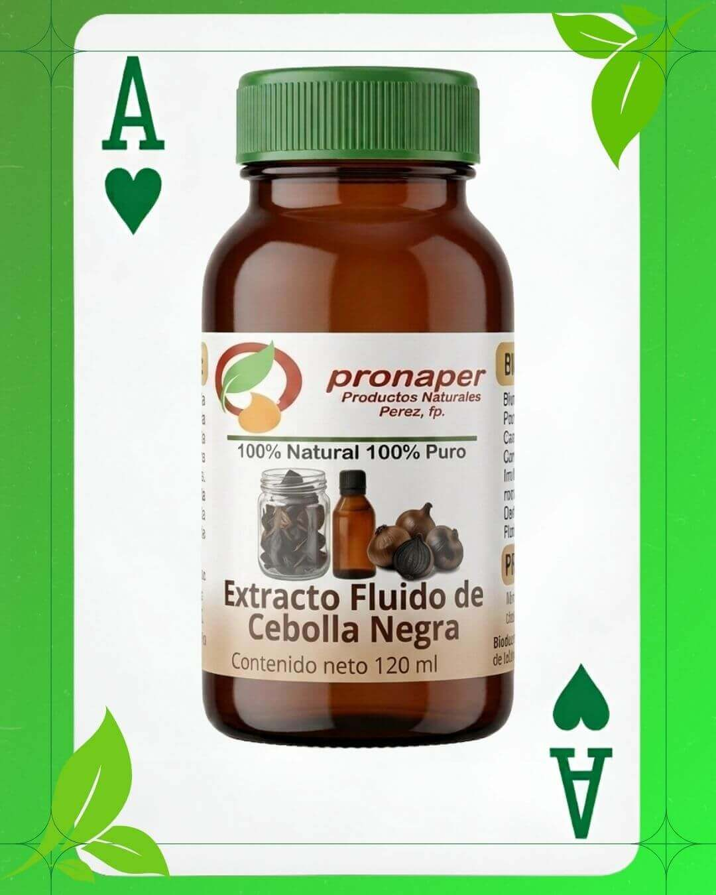

El secreto guardado de la botánica moderna
Con el paso del tiempo, el cuerpo empieza a dar pequeñas señales: una digestión más lenta, pesadez al final del día, o esa fatiga constante que un café ya no logra quitar. A menudo buscamos soluciones complejas cuando la respuesta de la naturaleza siempre ha estado en la concentración justa de lo esencial.
Dentro de la fitoterapia avanzada, existe una combinación clave conocida como los tres ases del cuidado natural, capaz de transformar la vitalidad desde adentro:

Ajo Negro — Tu aliado cardiovascular cotidiano 🧄
A diferencia del ajo tradicional, su proceso de fermentación natural multiplica sus compuestos activos sin dejar mal aliento ni causar pesadez digestiva. Es el hábito ideal para quienes buscan mantener una presión arterial equilibrada, proteger el corazón y mantener la energía diaria en su punto óptimo de forma constante.

Limón Negro — El reinicio metabólico que el cuerpo pide 🍋
Al concentrar más de 4 veces la vitamina C del limón común, este extracto se convierte en una herramienta de alcalinización y limpieza profunda. Es perfecto para liberar al organismo de la hinchazón, favorecer la desintoxicación hepática y devolverle al cuerpo esa sensación de ligereza y pureza física.

Cebolla Negra — Elasticidad y fluidez para tus arterias 🧅
Considerada la gran especialista en salud vascular, duplica la capacidad antioxidante de la cebolla convencional. Su secreto está en cómo estimula el óxido nítrico para promover arterias más flexibles, una circulación fluida y una protección continua contra el desgaste celular.